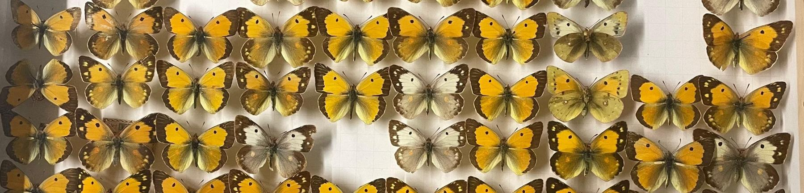
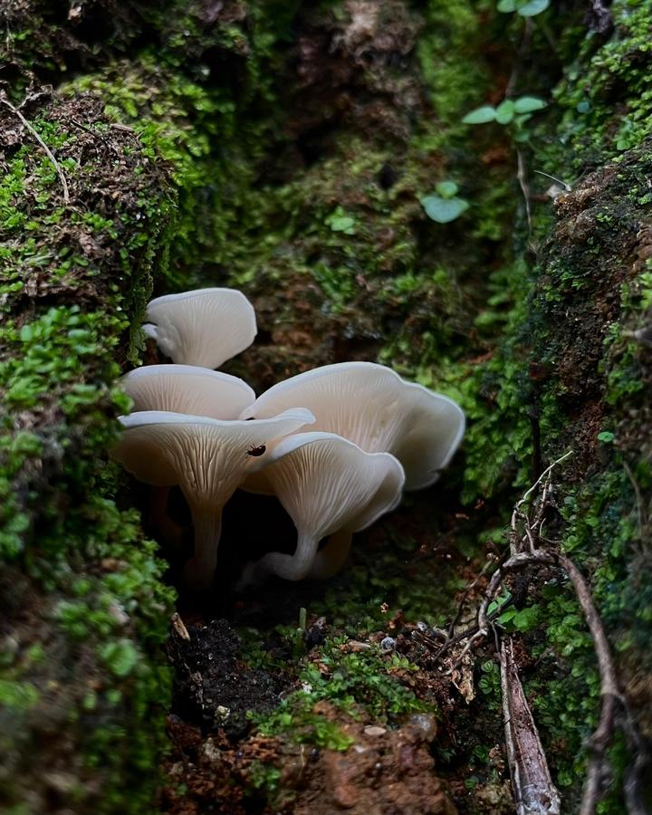
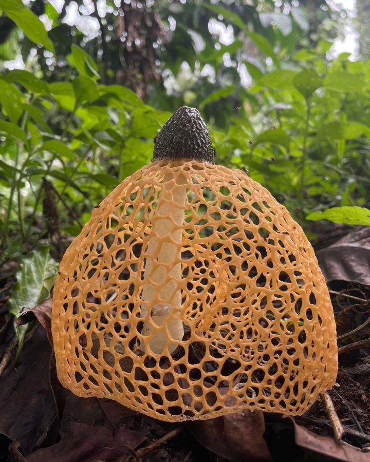
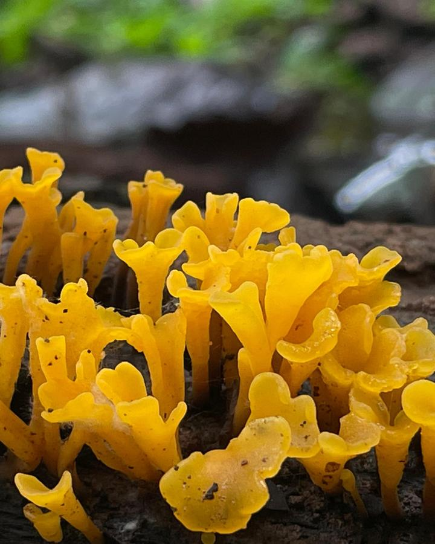
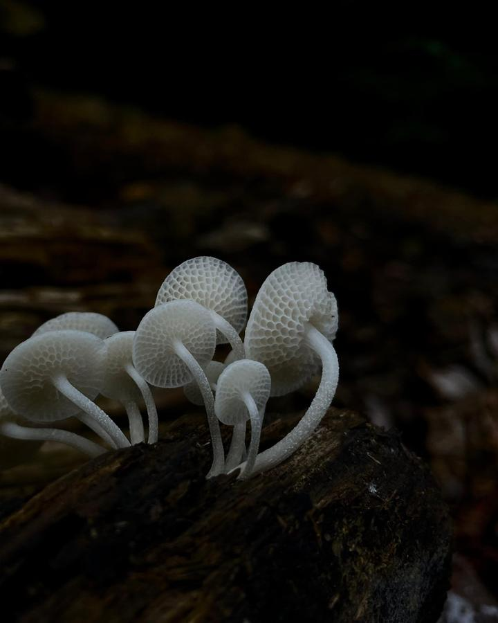
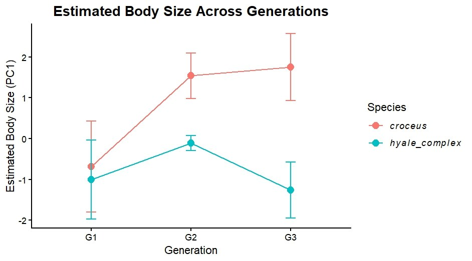
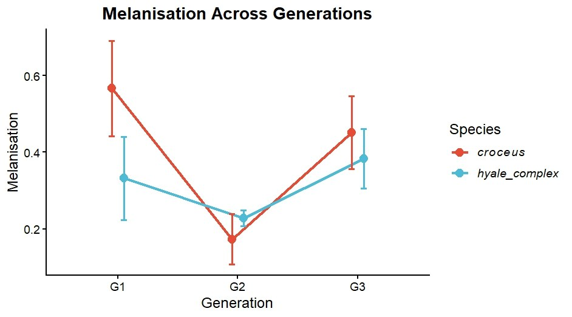
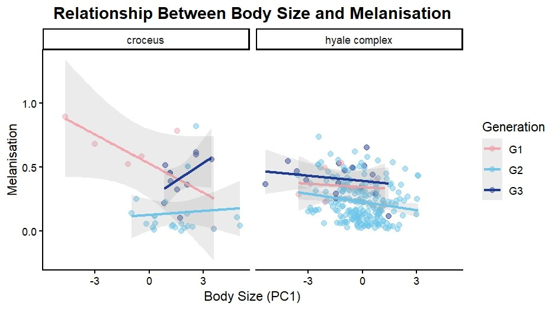

Aug 2025 – Feb 2026
Specimen digitisation volunteer
Übersee-Museum Bremen. Photographed and digitised pinned butterflies, recorded metadata, managed database entries.

I study how physiology links to ecology and evolution. My thesis uses museum specimens of European Colias butterflies to test how body size and wing melanization shift across seasonal generations, my first step into thermal ecophysiology.
Do body size and wing melanisation shift together with the seasons, or can they be tuned independently? Using museum specimens, I compared the migratory Colias croceus with the largely resident C. hyale–alfacariensis complex across three seasonal generations. Both traits changed with the season, but the coupling between them depended on taxon and generation, pointing to migratory capacity as a possibly overlooked axis of vulnerability under climate change.
Übersee-Museum Bremen. Photographed and digitised pinned butterflies, recorded metadata, managed database entries.
University of Bremen. Calibrated wing photography of urban and rural Pieris napi; analysed pigmentation by habitat and sex.
Western Ghats corridor feasibility study: sign surveys, camera-trapping, species identification, interviews and GIS land-tenure mapping.
Reproductive ecology, behaviour and conservation needs of the night frog Nyctibatrachus dattatreyaensis.
Forest biodiversity assessments, bird and butterfly surveys, plant identification, biomass estimation.
Before insects became my focus, I worked across the forests and farms of the Western Ghats: tropical butterfly line-transect surveys, macrofungal diversity in coffee agroforests in Kodagu (a field guide contribution), night frogs and wildlife corridors.
I also trained in conservation leadership at the NCF (2022) and have written popular science pieces for JLR Explore (2023), the Aghanashini Nature Foundation (2024) and HerpClub (2024).
My thesis suggests migratory capacity may be an overlooked axis of vulnerability as the seasons shift. I want to understand how insect physiology responds.
By combining museum collections, quantitative analysis and fieldwork, I want to ask how physiology, host plants and life history together decide which insects cope.
British Arachnological Society · co-authored short note
Co-authored short note · under review
Community and Population Ecology, Behavioral Ecology, Food webs, GIS, field course in Öland (2024).
Silviculture and agroforestry, forest botany, forest resource management.
Languages: English C1 · Kannada B2 · Hindi B1 · German A2




Open to PhD and research conversations on insect ecophysiology, climate responses and conservation.
Model estimates and raw measurements from my Colias analysis, comparing C. croceus with the hyale complex across three seasonal generations (G1–G3).


